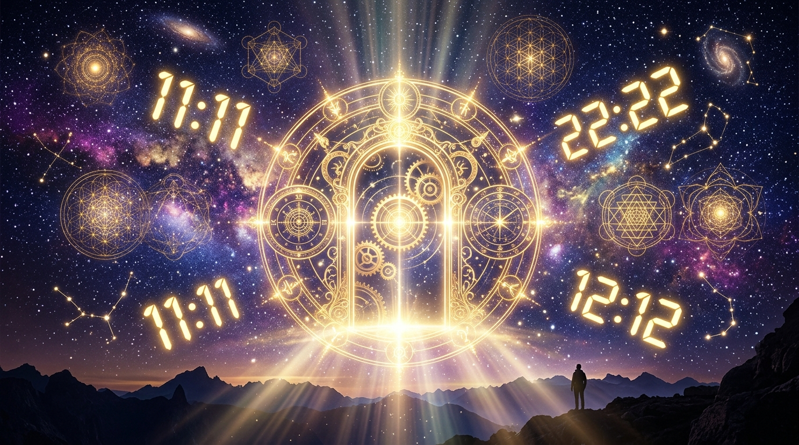

Miras el reloj del teléfono o del coche sin pensarlo y marca exactamente las 11:11. Al día siguiente, te despiertas en mitad de la noche y el reloj digital brilla con un 03:03. Vas por la calle y una matrícula muestra el 222 o miras la hora justo a las 22:22. Si este fenómeno te ocurre con frecuencia, no estás sufriendo una simple coincidencia matemática: estás experimentando un fenómeno de Sincronicidad Numérica.

El célebre psicólogo suizo Carl Gustav Jung definió la sincronicidad como la coincidencia temporal de dos o más acontecimientos no vinculados causalmente, pero que comparten un significado profundo para el observador. En la numerología pitagórica y la angelología esotérica, las Horas Espejo (aquellas donde los dígitos de la hora y los minutos coinciden exactamente, como 11:11, 14:14 o 20:20) son consideradas pequeñas llamadas de atención del cosmos: toques en el hombro de tus guías espirituales para recordarte que estás alineado con el flujo del universo.
1. ¿Por qué el Universo se Comunica a través de los Números?
Los números son el lenguaje universal y puro de la creación; no están condicionados por idiomas humanos, modas ni barreras culturales. Cuando tu mente inconsciente capta una hora espejo repetida, ocurre por tres razones esenciales:
- Confirmación de Sendero: Estás en el lugar correcto, en el momento preciso y tomando las decisiones adecuadas para tu evolución.
- Alerta de Pensamiento: El universo te pide que prestes atención a lo que estabas pensando exactamente un segundo antes de mirar el reloj (ya que estás manifestando esa realidad con gran rapidez).
- Despertar de Conciencia: Tu vibración está elevándose y tu glándula pineal comienza a percibir las sutiles sincronías que unen el plano físico con el plano espiritual.
2. Diccionario Completo de las Horas Espejo Principales
| HORA | ARQUETIPO CÓSMICO | MENSAJE ESPIRITUAL Y CONSEJO |
|---|---|---|
| 00:00 | El Renacimiento / El Vacío Fértil | Cierre absoluto de un ciclo y vuelta al origen sagrado. Estás ante una hoja en blanco; pide un deseo con fe. |
| 01:01 | El Liderazgo y el Amor | Alguien piensa en ti con afecto. Te recuerda confiar en tu fuerza iniciadora y tomar las riendas de tus proyectos. |
| 03:03 | La Creatividad y la Intuición | Alineación de mente, cuerpo y espíritu. Es hora de expresarte a través del arte, la palabra y la verdad interior. |
| 07:07 | La Sabiduría Espiritual | El número místico por excelencia. Confirmación de que tus oraciones y meditaciones están dando frutos visibles. |
| 10:10 | La Rueda de la Fortuna | Grandes giros positivos en el destino material y afectivo. Prepárate para recoger la cosecha de tu esfuerzo. |
| 11:11 | El Gran Portal de Manifestación | La hora espejo más poderosa de todas. Portal directo entre dimensiones. Mantén pensamientos de máxima luz y decreta tu realidad. |
| 12:12 | El Salto Cuántico y la Fe | Momento de soltar el control y confiar. Una gran transformación está ocurriendo entre bastidores a tu favor. |
| 15:15 | La Pasión y el Magnetismo | Despertar de la energía vital y relaciones intensas. Cuidado con caer en tentaciones de apego material o celos. |
| 20:20 | El Juicio y la Claridad | Se disipan las dudas. Una verdad que estaba oculta sale a la luz para liberarte y darte paz mental. |
| 22:22 | El Gran Constructor Terrenal | Tus sueños e ideales espirituales están a punto de plasmarse en el plano material tangible. Sigue perseverando. |
3. Las Horas Invertidas Más Relevantes
Cuando los dígitos se reflejan de forma invertida (como 12:21 o 21:12), el mensaje suele apuntar a la necesidad de revisar tu mundo interior:
- 12:21: Alguien de tu entorno está hablando de ti de forma positiva; mantén la generosidad y el optimismo.
- 13:31: Te advierte sobre la necesidad de paciencia y prudencia ante posibles contratiempos menores.
- 21:12: Confirma que tus ángeles custodios y protectores cuidan de tu salud y tu familia.
4. El Ritual de Anclaje de 1 Minuto al Ver una Hora Espejo
Cuando te encuentres con una hora espejo, no te limites a sonreír y seguir con tu rutina. Aprovecha el portal con este sencillo ejercicio:
- Detente por diez segundos y coloca una mano sobre tu corazón.
- Inhala profundo y repite mentalmente: “Agradezco la guía de mis protectores y me abro a recibir las bendiciones del cosmos en perfecta armonía.”
- Sonríe y continúa tu jornada con la certeza de que no caminas en soledad.
✦ Conexión Numérica: Los números espejo no son casualidades; son guiños luminosos del universo recordándote que la magia está viva en cada segundo de tu existencia.
Conclusión: Sintoniza con la Sincronía Universal
Aprender a descifrar las horas espejo transforma tu relación con el tiempo. El reloj deja de ser una máquina de estrés y plazos para convertirse en un oráculo viviente que te acompaña, te protege y te recuerda tu naturaleza cósmica.
🔢 Calcula tu Número de Destino: Si deseas profundizar en el significado de tus números personales de nacimiento, visita nuestra sección de Numerología Pitagórica y descubre tu Sendero de Vida hoy mismo.